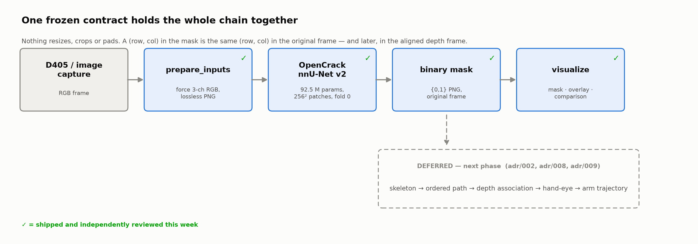
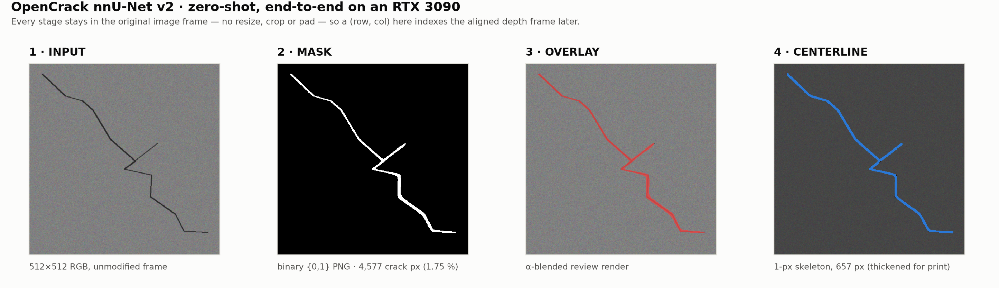
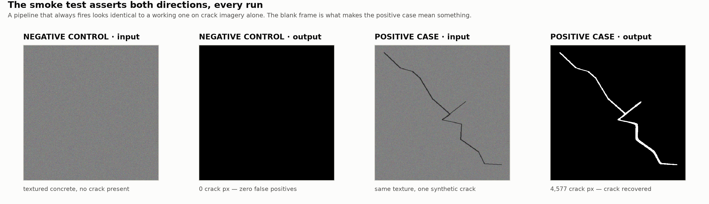
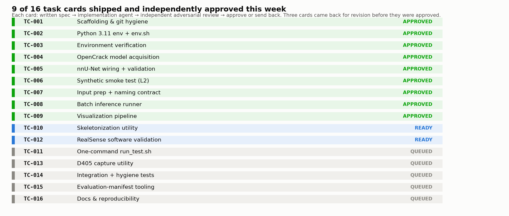
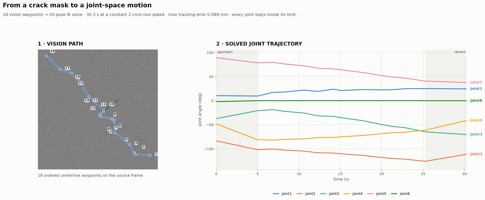
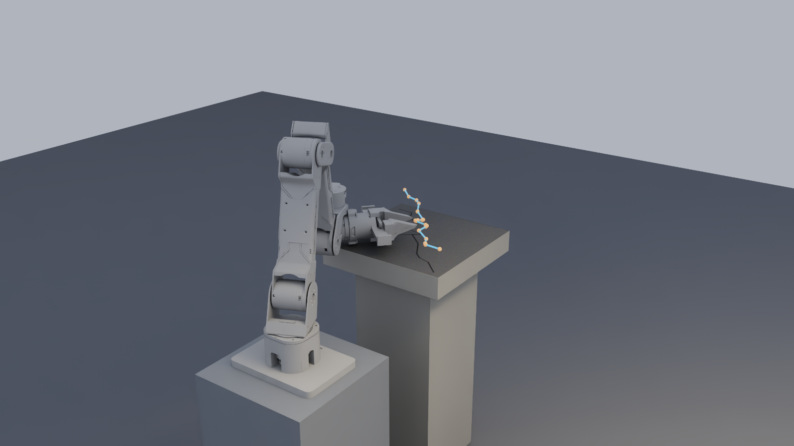
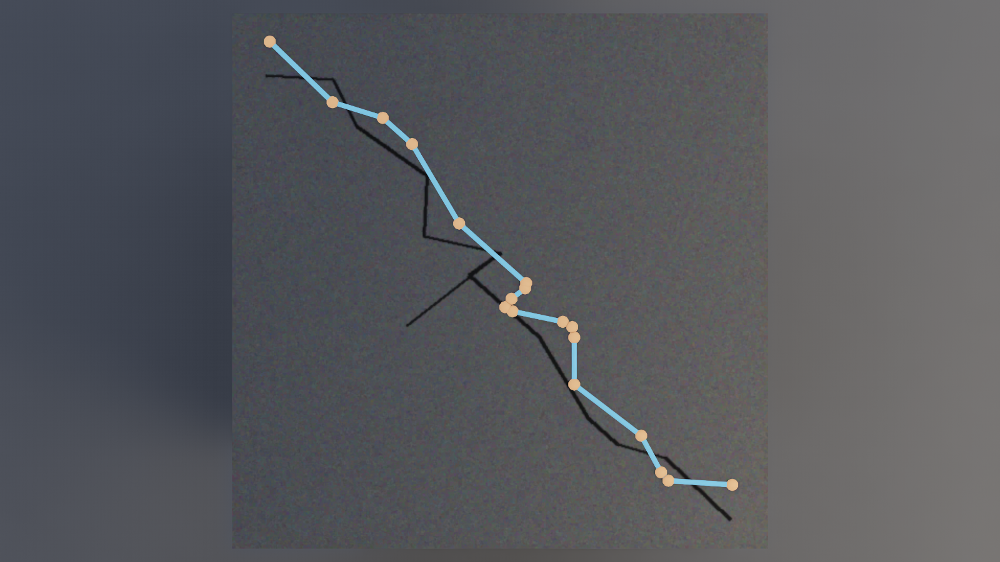
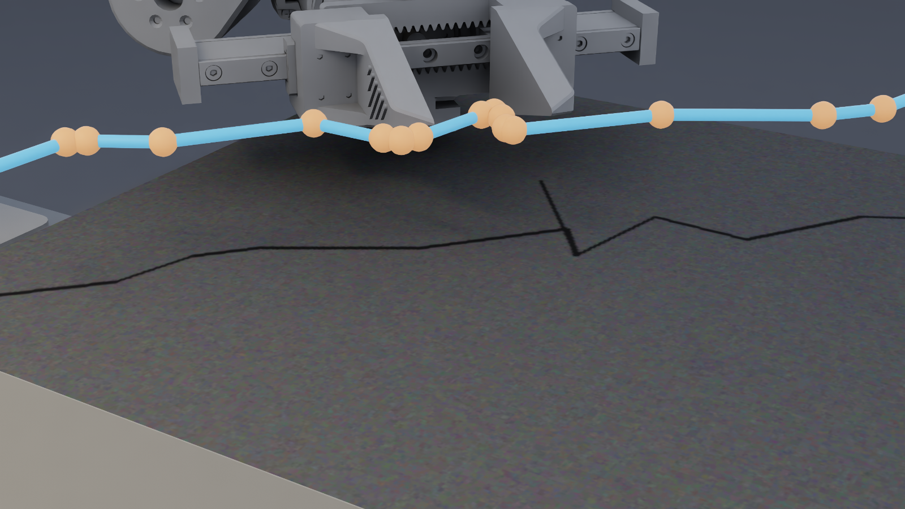

reBot B601-DM capstone · week of 14–20 Sep 2026
A zero-shot crack-segmentation front-end for robotic concrete inspection — built, reviewed and proven end to end on the GPU this week.
rebot_crack_vision · OpenCrack nnU-Net v2 · RTX 3090
The problem
The capstone goal is a reBot B601-DM arm that follows a crack across a concrete surface with a sensor on its tool — bridge and structure inspection without a human tracing the defect by hand.
That needs perception first. Everything downstream — depth, path, trajectory — is meaningless if the pixels marked "crack" are wrong.
This week's question: can a publicly released crack model work zero-shot on our imagery, or does the capstone have to fund a labelling and training effort of its own?
| The candidate | |
|---|---|
| Model | OpenCrack nnU-Net v2, 2D |
| Weights | 268 MB · 92.5 M params · fold 0 |
| Trained on | 49,531 images |
| Reported | 0.539 IoU · 0.641 clIoU |
| Licence | CC-BY-4.0 |
| Our cost | zero training runs |
What shipped
Architecture

The frame-invariant rule is the load-bearing decision: break it once and a mis-registered trajectory shows up months later, far from the cause.
Result

Level-2 smoke test, run on demand: 4,577 crack pixels (1.75 % of frame), reduced to a 657-pixel one-pixel-wide centerline.
Rigour

A pipeline stuck in the "on" position looks identical to a working one when you only ever show it cracks.
Engineering
R-01 · environment
ROS poisons the interpreter. The shell profile puts ROS Humble's Python 3.10 packages on the path of a 3.11 process — pure-Python packages shadow real ones, compiled ones throw opaque ABI errors.
env.sh scrubs PYTHONPATH, filters /opt/ros out of
the loader path, and the verifier fails the build if a ROS entry ever returns.
R-02 · shared GPU
The card is not ours alone. Other projects on this workstation park multi-GB servers on GPU 0 without warning.
An OOM prints a five-step degradation ladder as literal next commands instead of a
traceback — --not_on_device, fewer workers, no TTA, downscale, CPU. No task may
ever kill another project's GPU process.
R-03 · silent misread
Predictions are {0,1}, not {0,255}. The mask PNG looks solid black in any viewer. The natural reaction — "it detected nothing, let me rescale it" — corrupts the data.
Documented, logged once per run, binarised as > 0 everywhere, and pinned
by a test so it can never drift.
Process

Spec → implementation → adversarial review that re-runs every acceptance command → approve or send back. Three cards were sent back.
What review caught
A corrupt model file, downloaded clean. plans.json had a
duplicated JSON document appended to it — every parse threw
Extra data: line 218. Caught by semantic validation of the model tree, not by
a crash three cards later.
A card marked complete that wasn't. TC-005 scored 7/10 at review and was rejected. Approving it would have flipped downstream work to "ready" on a model tree that could not be loaded.
Two upstream traps, found in planning. The model card documents a filename that does not exist in the repository, and nnU-Net defaults to five folds and a checkpoint this model does not ship. Both are now pinned in config and asserted by tests.
Every approval re-derived from the filesystem. Reviews re-ran the acceptance commands rather than reading the implementer's report — including a full real-model GPU run, with GPU memory checked back to its idle baseline afterwards.
Demo · not yet a validated capability

18 ordered centerline waypoints → a 20-pose IK solve for the B601-DM: max tool position error 0.089 mm, every joint inside its limit, 30.3 s at a constant 2 cm/s. The surface pose and the camera→robot transform are declared, not calibrated.
Demo · not yet a validated capability

The real B601-DM URDF, a concrete coupon carrying the actual image the model ran on, and the vision-derived path in the scene — rendered headless on the same RTX 3090 that ran the segmentation.
Demo · not yet a validated capability


Orthographic, camera dead-centre above the coupon, path flattened to zero
standoff so there is no parallax to hide behind — this is the actual proof shot. Four
colour-coded fiducials (not shown here) confirm the texture's corners land exactly on the
coupon's geometric corners. A few millimetres of visible fuzz remain — sphere/tube size and
ordinary texture-filtering blur, not a coordinate bug — documented in
presentation/sim/README.md.
Honesty
Measured
Declared, not yet measured
The demo that follows the vision into the arm is scaffolding for this talk, not a validated capability.
Next
| Card | Unlocks |
|---|---|
| TC-010 | skeletonization as a first-class stage |
| TC-011 | the whole chain behind one command |
| TC-012/13 | D405 RGB + aligned depth capture |
| TC-014 | integration and contract tests |
| TC-015/16 | evaluation manifests, reproducibility |
Then the real experiment. A D405 test plan is already written: a distance sweep, and negative controls chosen to be hard — construction seams, stains, aggregate, scratches, marker lines.
The point is to characterise the failure surface deliberately rather than discover it by accident on the robot.
Only after that does depth projection, hand-eye calibration and a real arm trajectory become honest work rather than a demo.
Takeaway
Everything here is reproducible from the repository: pinned requirements, a launcher that scrubs the environment, a hash-verified model tree, and a smoke test that proves the GPU path in about fourteen seconds.